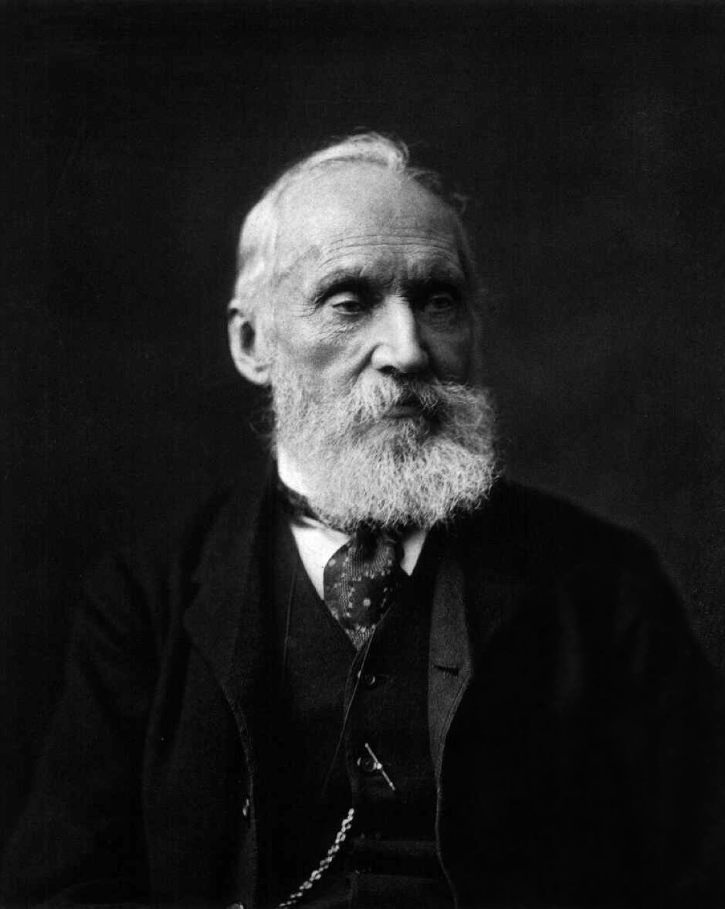
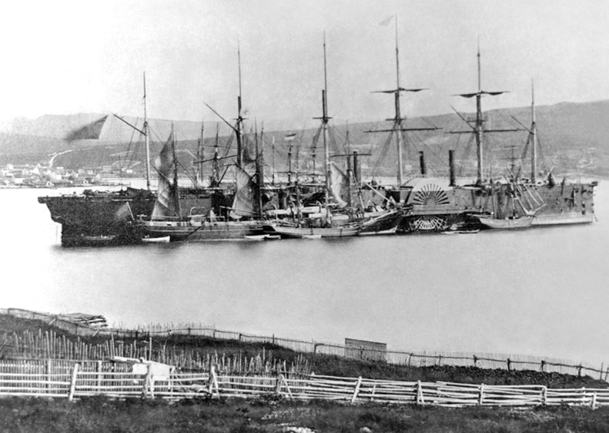
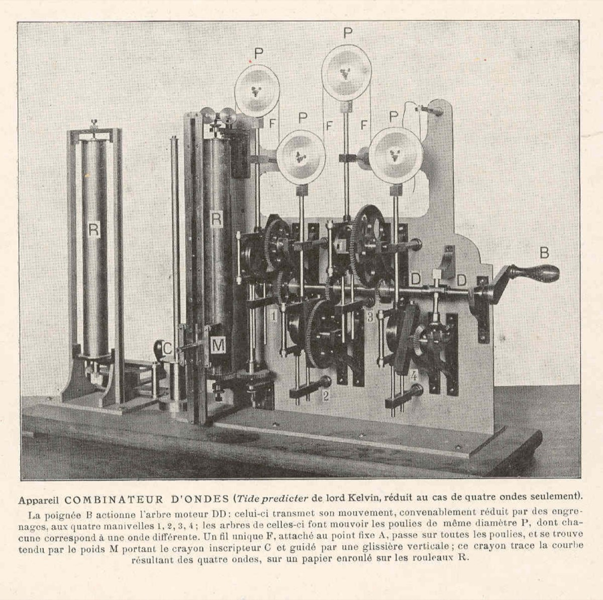
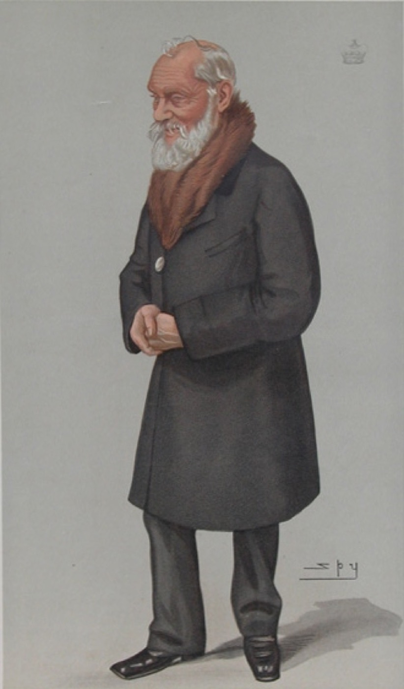

William Thomson · 1824–1907
KELVIN
The man who found the bottom of temperature
Kelvin in 60 seconds
- Born
- Belfast, Ireland, 26 June 1824
- Prodigy
- At university at 10, a professor at 22
- Discovery
- Found absolute zero, −273.15 °C — the kelvin is named after him
- Law
- Stated the Second Law of thermodynamics, 1851
- Engineer
- Made the Atlantic telegraph cable work — knighted in 1866
- Wrong
- Said the Earth was 20–40 million years old. It is 4.5 billion
Buried in Westminster Abbey, next to Isaac Newton.
Part 1 · His life
A prodigy from Belfast
He started university at 10, published his first physics paper at 16, and became a professor at 22.
William Thomson was born in Belfast, Ireland, on 26 June 1824. His father, James, was a farmer’s son who taught himself mathematics and became a professor. He taught his children at home. William’s mother died when he was 6.
In 1832 the family moved to Glasgow, Scotland, where his father taught at the university. William enrolled there at age 10 — Scottish universities took very young students at the time.
He loved science early. At 16 he read Joseph Fourier’s book on how heat flows. When a professor attacked the book, William published a defence under the fake name “P.Q.R.” Fourier’s mathematics shaped the rest of his career.

- 1834
- Enrolls at the University of Glasgow, age 10
- 1841–45
- Cambridge University. Comes 2nd in the famous maths exam (“Second Wrangler”), wins the Smith’s Prize, and is a champion rower
- 1845
- A year in Paris doing hands-on experiments in Henri Victor Regnault’s laboratory
- 1846
- Professor of Natural Philosophy (physics) at Glasgow, age 22 — a job he keeps for 53 years. He builds Britain’s first physics teaching laboratory
A father who taught him mathematics at home, a university education that began at 10, and training in both theory (Cambridge) and real experiments (Paris). Very few scientists of his time had all three.
Part 1 · His life
His world
Kelvin lived through the height of Britain’s Industrial Revolution — an age of steam engines, iron ships, empire and the telegraph.
People expected science to be useful: to build better engines, ships and telegraphs. The word “scientist” was only invented in 1833, when Kelvin was 9. His own job title was “natural philosopher.”
- 1833 The word “scientist” is invented
- 1845–52 The Great Famine in Ireland, where he was born
- 1851 The Great Exhibition in London shows off British industry
- 1859 Charles Darwin publishes On the Origin of Species
- 1861–65 The American Civil War
- 1865 James Clerk Maxwell publishes the equations of electromagnetism
- 1866 The first lasting telegraph cable across the Atlantic — Kelvin’s
- 1879 Thomas Edison’s practical light bulb
- 1895–96 X-rays and radioactivity are discovered
- 1900–05 Max Planck and Albert Einstein start quantum physics and relativity
Necessity or happenstance?
The Atlantic cable, the ship’s compass, the depth-sounding machine and the tide predictor. Companies and the Royal Navy needed them — and paid him well.
Absolute temperature and the Second Law. Nobody paid for these. They came from reading the work of Sadi Carnot and Joseph Fourier.
The Joule–Thomson effect. It began because he happened to meet James Joule at a science meeting in 1847.
Answer: both. His fame and fortune came from necessity. His most lasting physics came from curiosity.
Part 2 · His science
Absolute zero
Temperature scales depended on a substance — how far mercury expanded in a tube, for example. Nobody knew whether cold had a limit.
In 1848 Kelvin showed that temperature has a bottom, which he put at −273 °C. Today we call it absolute zero: exactly 0 K, or −273.15 °C.
Heat is the motion of molecules. The colder a gas gets, the slower its molecules move. Kelvin reasoned that there must be a temperature where the motion stops completely — and nothing can ever be colder. He built a temperature scale that starts there.
The evidence was already in the lab: cool any gas and it shrinks steadily. Extend that line, and every gas reaches zero volume at the same point, −273.15 °C.
Freeze a gas
Try: drag the slider, or tap a temperature below.
Look for: the molecules stop dead at absolute zero — and move faster, then glow red, yellow and white-hot, as the gas heats up.
Each dot is a nitrogen molecule. Their speeds follow the real spread of speeds in a gas, and the average speed is calculated live from the temperature. At 0 K everything stops.
The physics
Converting between the scales: the kelvin is the same size as a Celsius degree, but it starts at absolute zero.
The average (root-mean-square) speed of a gas molecule depends only on temperature T and the gas’s molar mass M:
For nitrogen (M = 0.028 kg/mol) at 300 K that gives 517 m/s. Speed goes as √T, so it reaches exactly zero at T = 0.
Every temperature in science is measured in kelvin. MRI scanners, superconductors and quantum computers all work within a few degrees of absolute zero.
Part 2 · His science
The Second Law
Heat was a weightless fluid called “caloric” that flowed from hot to cold and was never used up.
In 1851 Kelvin stated one of the most important laws in physics: no engine can turn heat completely into work.
Every engine takes heat from something hot, turns some of it into work, and dumps the rest into something cold. Kelvin showed that some heat must always be wasted. The best any engine can ever do depends only on the two temperatures. (The German physicist Rudolf Clausius reached the same law at almost the same time.)
Build a perfect engine
Try: drag the cold side down toward 0 K and watch the efficiency.
Look for: “Useful work” only reaches 100% when the cold side hits 0 K — and nothing can ever reach 0 K.
No work is possible — the cold side isn’t colder than the hot side.
Efficiency = 1 − Tc ÷ Th, with temperatures in kelvin. This is why his absolute scale matters: the formula only works when temperature starts at absolute zero.
It sets the limit on every car engine, power station and refrigerator. It also predicts that the universe will slowly run down — the “heat death”, an idea from Kelvin’s 1852 paper.
With James Joule, Kelvin found that a real gas cools when it squeezes through a small valve. That is how refrigerators, air conditioners and liquid nitrogen work.
Part 2 · His science
The Atlantic cable
An electrical signal arrives instantly, no matter how long the wire.
In the 1850s, engineers tried to lay a telegraph cable 3,000 km across the bottom of the Atlantic. Kelvin worked out the physics that made it work.
The first cable, in 1858, failed that October after carrying 732 messages. Its chief electrician, Wildman Whitehouse, pushed huge voltages through it and burned it out.
Kelvin had shown that a long underwater cable smears and slows a signal — and the delay grows with the square of the length. His answer: use small, safe currents, and a detector sensitive enough to read them — his mirror galvanometer.
The 1866 cable, laid by the giant ship Great Eastern, worked. Kelvin was knighted that year, and his cable patents made him rich.

| Cable length | Signal delay |
|---|---|
| 1,500 km | 0.9 s |
| 3,000 km | 3.6 s |
| 6,000 km | 14.4 s |
Double the length and the delay goes up four times. Calculated with typical 1850s cable values.
Undersea cables still carry most of the internet traffic between continents — descendants of the line Kelvin made work.
Part 2 · His science
The inventor
Kelvin applied for about 70 patents. His most remarkable machine could predict the tides.
Tides are the sum of several regular waves caused by the Moon and the Sun. In 1872 Kelvin built a machine of wheels and pulleys that added these waves together — a mechanical computer that could work out a year of tides in a few hours. It used the same mathematics he had first read at 16.
Predict the tides
Try: each slider is one wave — raise or lower them to add them up.
Look for: with just the Moon and the Sun, the tides swell to strong “spring tides” and shrink to weak “neap tides” — a full cycle about every 14.77 days.
The curve is the six waves added together over 30 days, exactly as Kelvin’s machine did with brass wheels. Raise the other sliders to see the more complicated pattern of a real harbour.
- Mirror galvanometer — detected tiny currents on the Atlantic cable
- Siphon recorder — printed telegraph messages automatically
- Ship’s compass — worked on iron ships; used by the Royal Navy
- Depth-sounding machine — measured sea depth without stopping the ship
- Water dropper — makes electric sparks from dripping water

Part 3 · Wrong and right
Where he was wrong: the age of the Earth
Geologists assumed the Earth was almost endlessly old. Nobody had tried to calculate its age using physics.
In 1862 Kelvin calculated that the Earth was tens of millions of years old — later settling on 20–40 million. It is actually 4.5 billion.
He assumed the Earth began as molten rock and has been cooling ever since. By measuring how quickly rock gets hotter as you go down a mine, he worked out how long the cooling had taken. He used the result to argue against Darwin, whose theory of evolution needed far more time.
Redo Kelvin’s calculation
Try: change his three assumptions, or tick the boxes to add later ideas.
Look for: however you set them, Kelvin’s bar stays a sliver next to the real age of the Earth.
The top bar is Kelvin’s own formula with his own numbers. Perry’s result and the real age are historical figures, drawn to scale. The radioactive-heat bar is an estimate: radioactivity supplies about half of Earth’s heat, so it roughly doubles his answer — still nowhere near enough.
Most books say radioactivity proved Kelvin wrong. That is mostly a myth. His real mistake was assuming heat escapes only by slowly soaking through solid rock.
In 1895, his former assistant John Perry showed that if the Earth’s hot interior can flow (convection), the Earth could be billions of years old — before radioactivity was even discovered.
In 1904 Ernest Rutherford lectured on radium with Kelvin, then 80, in the audience. Rutherford later said Kelvin fell asleep — then woke up just as the key point arrived.
Rutherford’s clever reply is often misquoted: it was about Kelvin’s estimate for the age of the Sun, not the Earth.
The lesson: his maths was right. One assumption was wrong — and good maths can’t rescue a wrong assumption.
The physics
For a body that starts at temperature T₀ and cools through its surface, Fourier’s heat equation gives the time since cooling began:
κ is how fast rock carries heat and dT/dz is how quickly temperature rises with depth. With Kelvin’s 1862 values (T₀ ≈ 3,900 K, dT/dz ≈ 36.5 K/km, κ ≈ 1.2 × 10⁻⁶ m²/s) this gives about 96 million years.
Part 3 · Wrong and right
Where he was right: two clouds
In 1900 Kelvin named the two problems physics could not explain. Both led to revolutions within five years.
“The beauty and clearness of the dynamical theory … is at present obscured by two clouds.”Kelvin, Royal Institution, 27 April 1900
Scientists thought light travelled through an invisible “ether”, but experiments could not detect the Earth moving through it. In 1905 Einstein’s theory of relativity removed the ether entirely.
The accepted theory predicted that a hot object should give off infinite energy at short wavelengths. In 1900 Max Planck fixed it by assuming energy comes in small packets — the start of quantum physics.
See cloud 2
Try: change the temperature of the hot object.
Look for: the old theory (dashed) shoots off the top of the chart, while Planck’s curve (solid) comes back down — and at the Sun’s temperature it peaks right in visible light.
Starts at 5,772 K, the temperature of the Sun’s surface — its light peaks at about 500 nm, green-blue.
The physics
The old (Rayleigh–Jeans) law, and Planck’s correction:
As λ gets small the first one grows without limit. Planck’s turns over. Its peak follows Wien’s law, λmaxT = 2.898 × 10⁻³ m·K.
- False
“There is nothing new to be discovered in physics now.” There is no record of Kelvin ever saying it. The closest real quote is from Albert Michelson in 1894. The two-clouds lecture shows Kelvin believed the opposite.
- True
Flying machines are impossible. In 1896 he wrote that he had “not the smallest molecule of faith in aerial navigation other than ballooning.” The Wright brothers flew seven years later.
- Misleading
“X-rays will prove to be a hoax.” No source for these words has been found. He was sceptical when the news first arrived, but by January 1896 he had written to congratulate the discoverer, and in May 1896 he had his own hand X-rayed.
Part 4 · The man
The man himself
Brilliant, restless and stubborn — a professor who got rich, and a scientist who was wrong in public for 40 years.
An energetic, easily distracted lecturer who often dropped the planned lesson to talk about his latest research. He was deeply religious, very stubborn — and generous when he was finally proved wrong.
- Sailing — he owned a large yacht, the Lalla Rookh. Many of his inventions came from time at sea.
- Rowing — won Cambridge’s top single-sculls race in 1843.
- Music — he played the French horn.
Married Margaret Crum in 1852; she was ill for most of their marriage and died in 1870. Married Frances Blandy on 24 June 1874, two days before his 50th birthday. No children.

His philosophy of science
“When you can measure what you are speaking about, and express it in numbers, you know something about it; but when you cannot … your knowledge is of a meagre and unsatisfactory kind.” — lecture, 1883
He said he never felt he understood something until he could build a mechanical model of it. That is why his tide predictor is a real machine — and why he distrusted Maxwell’s abstract equations.
He got rich from about 70 patents while staying a professor. In 1881 his Glasgow house became one of the first in the world lit entirely by electric light. And he was the first British scientist to become a lord.
His peers
- James Joule
- His partner on the Joule–Thomson effect
- James Clerk Maxwell
- Fellow Scottish physicist; they wrote to each other often
- Hermann von Helmholtz
- German physicist and close friend
- George Stokes
- Lifelong friend — about 650 letters between them
- Peter Guthrie Tait
- Co-wrote a famous physics textbook with him
- Rudolf Clausius
- Discovered the Second Law at the same time — a rival
- Charles Darwin
- His opponent over the age of the Earth
- John Perry & Ernest Rutherford
- Younger scientists who showed where he went wrong
Part 4 · The man
Honours and legacy
Knighted for a cable, made a lord for his science, and buried next to Isaac Newton.
- 1851
- Fellow of the Royal Society
- 1856
- Royal Medal
- 1866
- Knighted — “Sir William Thomson” — for the Atlantic cable
- 1883
- Copley Medal, the Royal Society’s highest award
- 1890–95
- President of the Royal Society
- 1892
- Made Baron Kelvin — the first British scientist in the House of Lords. The name comes from the River Kelvin, which runs past the University of Glasgow
- 1902
- Order of Merit
- 1907
- Died 17 December, aged 83. Buried in Westminster Abbey, next to Isaac Newton
He also received honorary degrees from many universities, but never a Nobel Prize — they only began in 1901, long after his main work.
He made temperature universal, put the Second Law at the centre of physics, and named the two problems that led to relativity and quantum physics.
The kelvin is one of the 7 base units of science. Since 2019 it is defined by a fixed constant of nature, k = 1.380649 × 10⁻²³ J/K — no substance needed, just as he wanted in 1848.
Sources & references
Sources
13 independent sources, including 4 of Kelvin’s own papers and lectures.
Prints this bibliography on its own, without the rest of the site.
Primary sources
- Thomson, William. "On an Absolute Thermometric Scale Founded on Carnot's Theory of the Motive Power of Heat." Philosophical Magazine, 1848.
- Thomson, William. "On the Secular Cooling of the Earth." Transactions of the Royal Society of Edinburgh, vol. 23, 1864, pp. 157–69. zapatopi.net
- Kelvin, Lord. "Nineteenth Century Clouds over the Dynamical Theory of Heat and Light." Royal Institution lecture, 27 Apr. 1900; Philosophical Magazine, series 6, vol. 2, no. 7, 1901, pp. 1–40.
- Thomson, William. "Electrical Units of Measurement." Lecture, 3 May 1883. Popular Lectures and Addresses, vol. 1, Macmillan, 1889, pp. 73–136.
Scholarly sources
- England, Philip, Peter Molnar, and Frank Richter. "John Perry's Neglected Critique of Kelvin's Age for the Earth: A Missed Opportunity in Geodynamics." GSA Today, vol. 17, no. 1, 2007, pp. 4–9. PDF
- England, Philip, Peter Molnar, and Frank Richter. "Kelvin, Perry and the Age of the Earth." American Scientist, vol. 95, no. 4, 2007, pp. 342–49. americanscientist.org
- Burchfield, Joe D. Lord Kelvin and the Age of the Earth. University of Chicago Press, 1990.
- Braterman, Paul. "Kelvin, Rutherford, and the Age of the Earth: I, The Myth." 3 Quarks Daily, 27 Jan. 2014. 3quarksdaily.com
- Thompson, Silvanus P. The Life of William Thomson, Baron Kelvin of Largs. Macmillan, 1910.
Reference sources
- "William Thomson, Baron Kelvin." Encyclopædia Britannica. britannica.com
- "William Thomson, Lord Kelvin." Westminster Abbey. westminster-abbey.org
- "Lord Kelvin." National Library of Scotland, Science Hall of Fame. digital.nls.uk
- "Kelvin: Boltzmann Constant." National Institute of Standards and Technology, SI redefinition, 2019. nist.gov
Image credits
All four images on this site are genuine historical images in the public domain, from Wikimedia Commons: the portrait photograph of Kelvin (Messrs. Dickinson, London); the Vanity Fair caricature by Leslie Ward, 29 April 1897; the steamship Great Eastern; and a 19th-century engraving of the tide-predicting machine.
Where each assignment question is answered
| Question | Chapter |
|---|---|
| Born where and when; early interest in science; family; education and training | 01 |
| What was happening in the world; major events; view of science; necessity or happenstance | 02 |
| What he is famous for; what he discovered; how it affects the world today | 03–06 |
| What was believed before his discoveries | “Before Kelvin” cards in 03, 04, 05, 07 |
| How it changed physics | 07, 08, 10 |
| Awards received | 10 |
| What kind of person; hobbies; what was unusual; philosophy of science | 09 |
| Contemporary peers | 09 |
| At least 5 independent sources | this chapter — 13 |